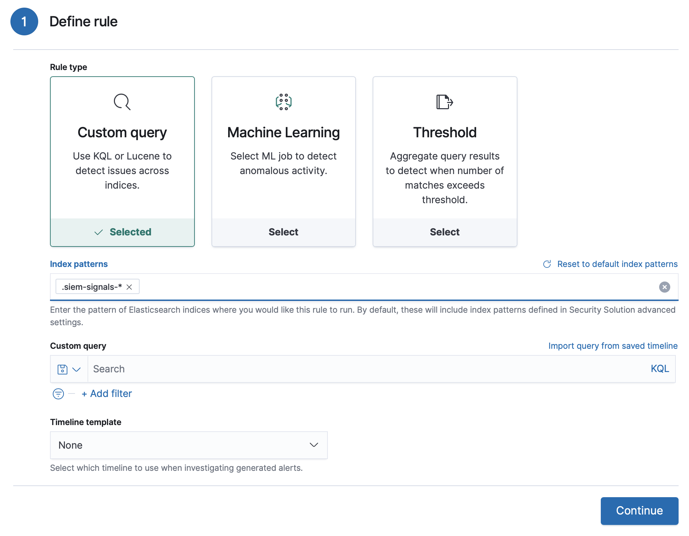

About building-block rulesedit
Create building-block rules when you do not want to see their generated alerts in the UI. This is useful when you want:
- A record of low-risk alerts without producing noise in the Alerts table.
-
Rules that execute on the alert indices (
.siem-signals-<kibana space>-*). You can then use building-block rules to create hidden alerts that act as a basis for an ordinary rule to generate visible alerts.
Set up rules that run on alert indicesedit
To create a rule that searches alert indices, in the Index patterns field, add the index pattern for alert indices:

View building-block alerts in the UIedit
- Go to Security → Detections
- In the Alert table, select Additional filters → Include building-block alerts.
On a building-block Rule details page, the rule’s alerts are displayed (by default, Include building-block alerts is selected).